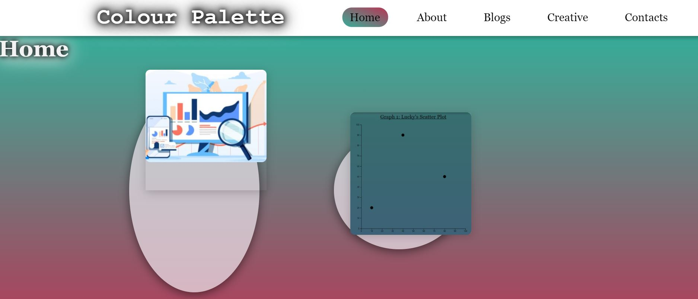

About:
Style Guide

Style Guide

For my Style guide I thought the best idea would be to create a mood board type layout with all of the
colours, themes, and design elements that I would want to try incorporate into my website.

My favourite of these elements are the gradient backgrounds for my webpage as well as the icon
cards I created. I decided to also display these cards in round shapes in order to go with the
colour palette theme.